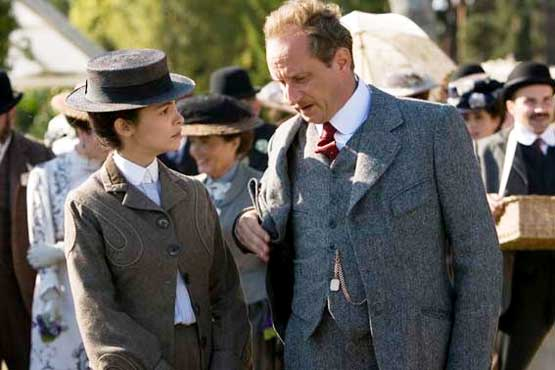
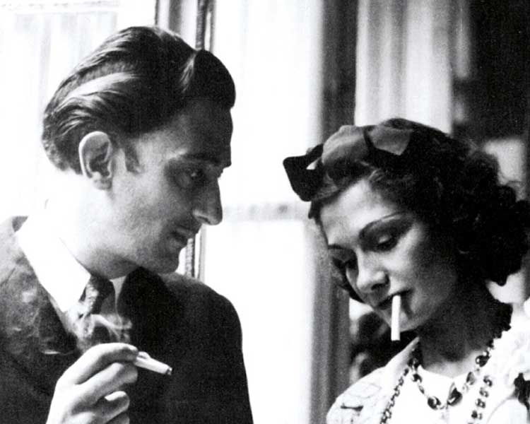

Etienne Balsan |
 |
At the Cabaret, Chanel met the young French ex-cavalry officer and wealthy textile heir Etienne Balsan. At the age of twenty-three, Chanel became Balsan's mistress, supplanting the courtesan Émilienne d'Alençon as his new favorite. For the next three years, she lived with him in his chateau near Compiègne, an area known for its wooded equestrian paths and the hunting life. It was a life style of self-indulgence, Balsan's wealth and leisure allowing the cultivation of a social set who reveled in partying and the gratification of human appetites with all the implied accompanying decadence. Balsan lavished Chanel with the beauties of "the rich life"—diamonds, dresses, and pearls. |
|---|---|---|
Boy Capel |
In 1908 Chanel begins an affair with one of Balsan's friends, Arthur Boy Capel.Capel, a wealthy member of the English upper class. Capel, very impressed by Chanel's style and hats offers to support her. He installes Chanel in an apartment in Paris and finances Chanel's first shops. It is said that Capel's own sartorial style influenced the conception of the Chanel look. The couple spent time together at fashionable resorts such as Deauville, but he was never faithful to Chanel. The affair lasted nine years, but even after Capel married an English aristocrat, Lady Diana Wyndham in 1918, he did not completely break off with Chanel. His death in a car accident, in late 1919, was the single most devastating event in Chanel's life.
|
 |